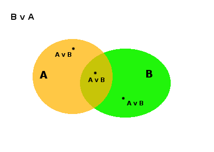
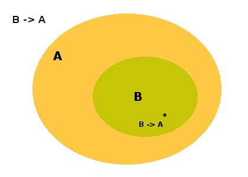
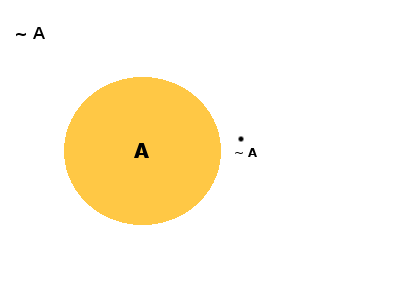

Viendo a los conectores lógicos como relaciones entre conjuntos
Mi amigo Joel estudia Filosofía en Rosario y este fin de semana estuvimos charlando sobre lógica. Durante la charla me enseño que los conectores lógicos se pueden pensar como relaciones entre conjuntos. Yo nunca los había visto así.
Esta forma de pensarlos es a veces muy útil y sirve para darnos cuenta cual es el conector indicado para representar cierto conocimiento. Por ejemplo, muchas veces me encontré queriendo representar conocimiento del tipo "Los conejos son blancos" y errónea e instintivamente escribía:
B(x): x es blanco
C(x): x es conejo
C(x) ^ B(x)
Lo cual es un error. La forma correcta de representar ese conocimiento es:
C(x) -> B(x)
La implicación entre C(x) y B(x) puede entenderse una forma muy simple:
C es el conjunto de todos los conejos y B es el conjunto de todas las cosas blancas.
Recordemos que la información que queremos representar es "Los conejos son blancos", enfatisando: Todos los conejos son blancos. No hay conejos grises o negros, todos son blancos.
El ejemplo en cuestión no era este, sino otro, pero lo importante es que Joel me explicó que la implicación es equivalente a la relación entre conjuntos de inclusión e hizo un dibujo parecido a este:

En el dibujo se ve claramente el exacto conocimiento que queríamos representar: si algo es conejo, entonces es blanco. Si pertenece al conjunto C entonces pertenece al conjunto B. Porque el conjunto B incluye al conjunto C. El conjunto de las cosas blancas incluye al conjunto de los conejos.
El resto de los conectores lógicos también pueden verse como relaciones entre conjuntos.
AND : intersección
AND o conjunción, muchas veces simbolizado con ^, es verdadero cuando los dos predicados que conecta lo son. Así pues B(x) ^ A(x) será verdadero cuando x pertenezca tanto a B como a A.

OR: unión
OR o disyunción es una relación menos estricta ya que para ser verdadera solo necesita que uno de sus predicados sea verdadero. En el ejemplo anterior, que x pertenezca a B o a A. Eventualmente podría pertenecer a ambos conjuntos.

XOR: unión - intersección
Unión MENOS intersección. La disyunción exclusiva es verdadera cuando x pertenece exclusivamente a uno de los conjuntos, pero es falsa cuando pertenece a ambos.

-> : inclusión
Es el caso del ejemplo de los conejos con el que empezó este post.

<-> : mutua inclusión
La doble implicación es un caso especial de la implicación ya que se define como A -> B AND B -> A. Así mismo su representación en forma de conjuntos es un caso especial de la inclusión. En el dibujo puede verse claramente que cuando decimos A(x) <-> B(x) estamos diciendo que cualquier elemento x que pertenezca a A también pertenece a B.

NOT : no pertenencia
Todos los conectores pueden pensarse como conjuntos: NOT A(x) significa que el elemento x no pertenece a A.

Para finalizar: todos los conectores lógicos pueden pensarse como relaciones entre conjuntos. Si se crean conectores a partir de algunos de los listados anteriormente, también se podrán definir las relaciones entre conjuntos correspondientes.
Comentarios
Comments powered by Disqus